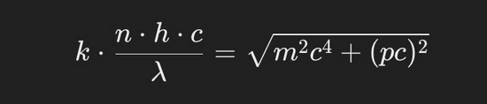
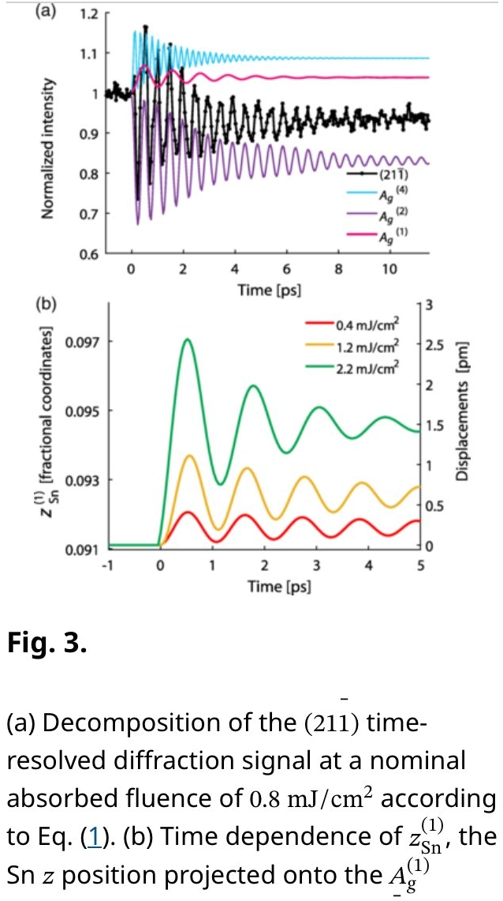

Introduction to Patterning
Patterning is a scientific theory positing that the universe follows an infinite but countable set of possible interference patterns. These spacetime equations describe how energy, matter, and information interact through wave-like behaviors across all scales.
The Patterning theory proposes that all physical phenomena can be modeled as interactions of waves and fields, with distinct patterns emerging from phase relationships, frequency content, and amplitude variations.
This website presents an exploration of Patterning theory, its mathematical foundations, practical applications, and relationship to existing physical theories including quantum electrodynamics and wave mechanics.
Theoretical Foundation
Core Principles of Patterning
At its core, Patterning theory rests on the understanding that photons (and by extension, electromagnetic interactions) can be described through their:
- Phase relationships
- Frequency content
- Amplitude variation
- Spatial distribution
The theory builds upon established frameworks in quantum electrodynamics but extends them by focusing on the pattern of interaction rather than just the particles involved.
Mathematical Framework
The mathematical foundation of Patterning can be expressed through a set of equations describing the interference patterns. These equations connect time, space, and energy through wave-like behaviors.
The fundamental equation governing electromagnetic field patterns in Patterning theory:
\[ \Lambda = \frac{\log\left(\frac{9.11}{33.333 \cdot x}\right)}{2\pi c} \]Where \(\Lambda\) represents the wavelength, \(c\) is the speed of light, and \(x\) is the spatial variable.
This equation describes how electromagnetic fields distribute energy in space, creating distinctive interference patterns that can be observed across different scales.


Wave-Particle Duality and Patterning
Patterning theory provides a unique perspective on wave-particle duality by focusing on the shape of interaction rather than debating the nature of light as either wave or particle.
In the Patterning framework, photons have both "a geometric size and a very specific shape" determined by orbital angular momentum (OAM) and polarization.
This is consistent with observations in various fields of physics, from optics to microwave engineering, where the same principles apply regardless of scale.
Designing Photons
One of the most revolutionary aspects of Patterning theory is the concept of "designing a photon's shape" by manipulating:
- Polarization
- Phase relationships
- Frequency content
- Amplitude using electrical power
This design principle has been demonstrated in practical applications like high-power microwave devices, magnetrons, traveling wave tubes, and free electron lasers.
Time Symmetry in Patterning
Patterning theory builds upon the Wheeler-Feynman absorber theory by incorporating time symmetry in electromagnetic interactions. This is a crucial aspect of the theory, as it suggests that:
"Time is measured by the amount of photons it needs to get somewhere and back. So it is imperative that a theory describing electromagnetic waves has time symmetry! Otherwise, everything breaks down."
In this understanding, photons don't inherently distinguish between forward and backward time directions - they only respond to phase, frequency, and amplitude.
The Wheeler-Feynman theory proposes a superposition of advanced and retarded waves, which in Patterning theory corresponds to an antisymmetric matrix comparable to the S-matrix in optics and microwave theory.
A fascinating implication is that reflected light carries information about the past, which aligns with our understanding of the finite phase difference between observer and object.
Practical Applications of Patterning
Quantum Communication
Patterning theory suggests that maintaining electromagnetic field patterns in the same phase and polarization (or orbital angular momentum) creates entangled states. This principle opens pathways to quantum communication technologies.
By creating two coupled cavities where photons are "phased" together, one could theoretically achieve entangled, faster-than-light electromagnetic communication using phase as the medium of information exchange.
Invisibility Technology
The principles of Patterning have already been applied to create radar invisibility cloaks, explained as "coupled light that starts spiraling around the metallic pattern."
Advanced Electromagnetic Devices
The theory has practical applications in various devices:
- Magnetrons
- Traveling wave tubes
- Vircators
- Gyrotrons
- Free electron lasers
- THz emitters
All these devices operate on the principle that "photons exchange energy with electrons by changing phase."
Simulation Results
The Patterning theory has been tested through extensive simulations using FlexPDE and electromagnetic boundary models. One particular simulation ran for 166 hours, constrained in the Z direction by a Laplace equation.
The FlexPDE Model
Key components of the simulation model include:
title "TE Waveguide"
select
modes =4 { This is the number of Eigenvalues desired. }
variables
Hx,Hy,Hz
definitions
cm = 0.01 ! conversion from cm to meters
epsr
epsr1=1 epsr2=30
ejump = 1/epsr2-1/epsr1 ! the boundary jump parameter
eps0 = 8.85e-12
mu0 = 4e-7*pi
c = 1/sqrt(mu0*eps0) ! light speed
k0b = 4
k0 = 100
k02 = k0^2 ! k0^2=omega^2*mu0*eps0
curlh = dx(Hy)-dy(Hx) ! terms used in equations and BC’s
divh = dx(Hx)+dy(Hy)
equations
Hz: div(grad(Hz)) + lambda*Hz = 0
Hx: dx(divh)/epsr - dy(curlh/epsr) + k02*Hx - lambda*Hx/epsr = 0
Hy: dx(curlh/epsr) + dy(divh)/epsr + k02*Hy - lambda*Hy/epsr = 0
constraints { since Hz has only natural boundary conditions,
we need to constrain the answer}
integral(Hx,Hy)=integral(Hz)
BOUNDARIES
These simulations provide visual representations of how electromagnetic fields distribute according to Patterning principles, creating distinctive interference patterns.
Connections to Established Physics
Quantum Electrodynamics
Patterning theory extends quantum electrodynamics by focusing on the shape and pattern of interactions rather than just the particles involved.
"The visible/observable universe is the result of Quantum Electrodynamics (as in photons exchange energy with electrons - that's why photon is one, single, elegant interpretation of ANY interaction within the observable universe)."
Dynamical Analogies
Drawing from Olson's "Dynamical Analogies," Patterning recognizes valid parallels between acoustics, electromagnetism, and Newtonian mechanics, suggesting that "the only thing that makes things tick is the interaction" across all these domains.
Wheeler-Feynman Absorber Theory
Patterning builds upon Wheeler-Feynman's concept of superposition of advanced and retarded waves, extending it to describe electromagnetic field patterns across different scales.
Conclusion: The Future of Patterning
Patterning theory offers a unified approach to understanding electromagnetic interactions across different scales, from quantum phenomena to macroscopic applications. By focusing on the patterns formed by interacting waves rather than just the particles involved, it provides new insights into fundamental physics.
The theory suggests that by understanding and manipulating these patterns, we can develop new technologies for quantum communication, invisibility, and energy manipulation.
As research continues, Patterning may provide a bridge between quantum mechanics and classical physics, offering a more intuitive understanding of phenomena that have traditionally been difficult to visualize or explain.